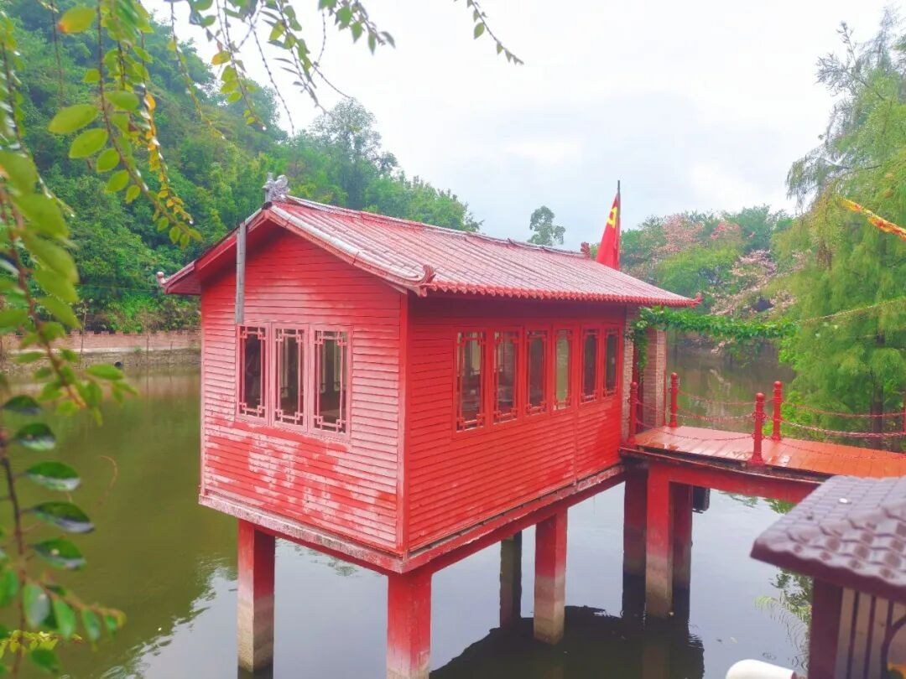
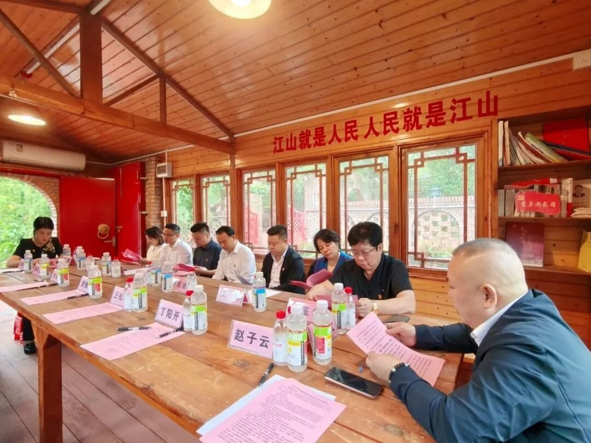
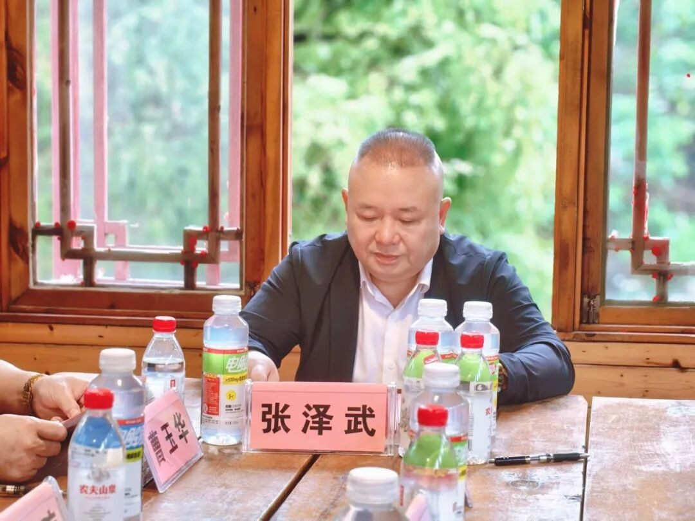
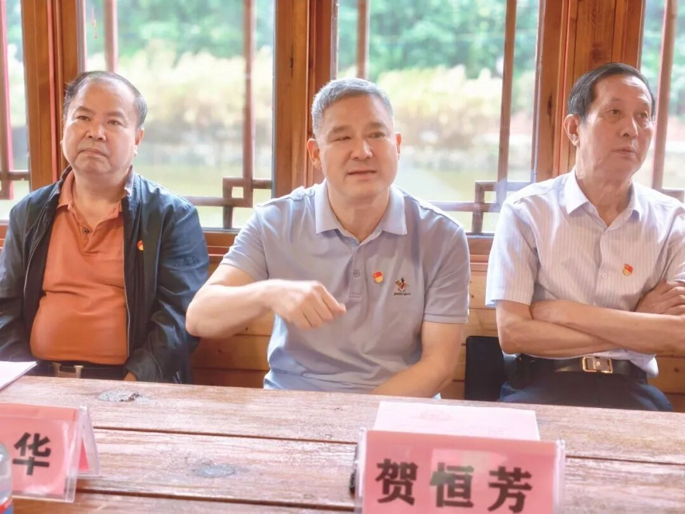
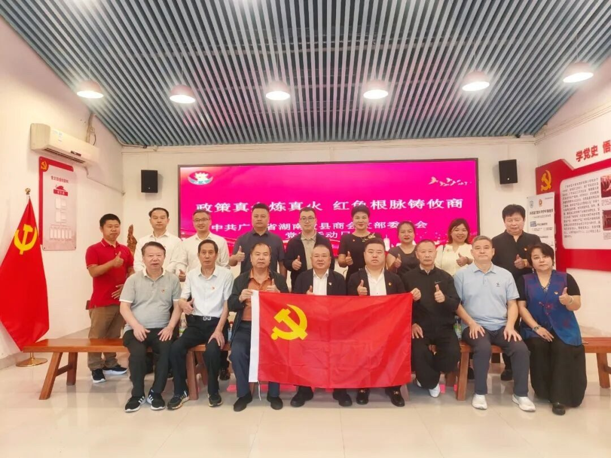
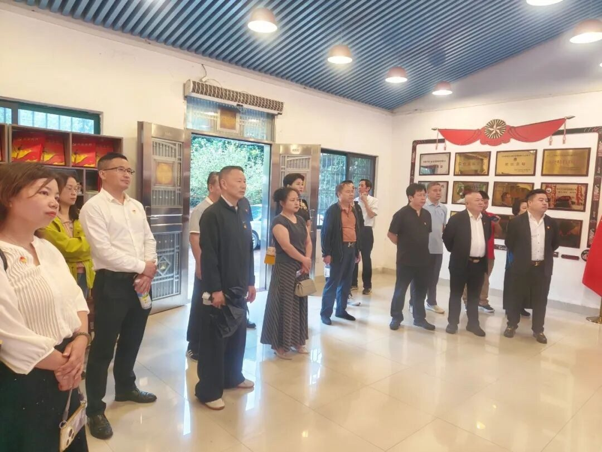
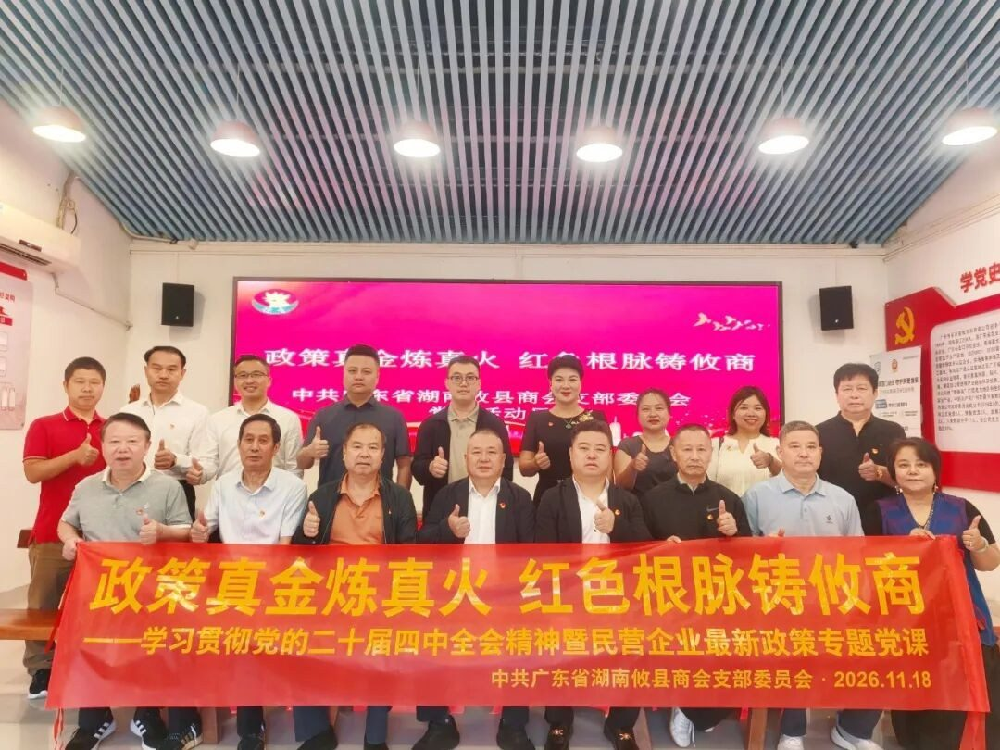

政策真金炼真火，红色根脉铸攸商。
2026年11月18日，广州白云山麓的百兴畜牧农场里，一艘红船静泊于青山之下。广东省湖南攸县商会党支部把党建活动日的课堂，设在了这艘红船上。参加活动的有商会顾问王松华、刘运泽、丁阳开、贺恒芳、廖冬文，商会党员及代表张成建、张泽武、王琼、丁自勇、曹玉华、周庆辉、赵子云、刘涵、阳华、邓丰伟、何霏及秘书处工作人员，共20人。本次活动由商会会员邓丰伟女士精心安排并全额赞助，党课由商会秘书长曹玉华主持。

一、缘起红船：把课堂设在初心启航的地方
1921年8月初，中共一大最后一天的会议从上海转移到浙江嘉兴南湖的一条游船上，在这条小船上通过了党的第一个纲领和第一个决议，庄严宣告中国共产党的诞生。红船精神被概括为开天辟地、敢为人先的首创精神，坚定理想、百折不挠的奋斗精神，立党为公、忠诚为民的奉献精神。
攸商从湘东小县走到粤港澳大湾区，靠的正是一股敢为人先的劲；攸商党员在实业一线扛事、在政策面前清醒、在老乡中间担责，需要的正是坚定理想和立党为公的底色。把党课设在红船上，不是形式的复古，而是提醒每一个坐在船舱里的人，出发时的那股劲永远不能丢。

二、第一堂课：张泽武讲站位、实用、融入
商会党支部书记张泽武没有照本宣科，而是把2026年以来国家出台的惠企政策比作真金，对着与会攸商成员一条一条拆开讲，炼成企业能上手、能见效的真火。他围绕站位、实用、融入三个关键词展开。
关于站位，张泽武指出，2026年是十五五开局之年，也是民营经济促进法落地见效的关键一年。党的二十届四中全会明确要求加强新经济组织、新社会组织、新就业群体党的建设；5月，国家发改委印发《「法治护航民营经济」行动方案》（发改民营〔2026〕637号），持续推动民营经济促进法实施见效。他结合三个信号作了说明：非禁即入写进了法律，党员企业家先要学会的不是找关系，而是找法条；账款拖欠问题中央高度重视，几天账期压到中小制造企业的现金流上就是一座山；湖南老家把2026年定为企业服务年，目标办得成事、雇得到人、赚得到钱、充分被尊重。他提醒在广东打拼的攸商，家乡把政策摆到这个份上，党员企业家要把它当成自己的资源来用。

关于实用，张泽武把文件里的干货拆成散会就能用、开春就能见效的抓手。其一，民间资本可参与的项目范围比很多人想象的更广，铁路、核电、水电、油气管道、供水等领域具备条件的项目民间资本持股比例可在10%以上；超过400万元的工程采购项目，适宜由中小企业提供的，预留预算总额40%以上专门面向中小企业，合同预付款比例可提高至30%以上，做工程、做供应链、做能源配套的会员可以直接对标。其二，数字化不是大企业的游戏，攸县香干全产业链做到26.4亿元、线上销售占比58%，靠的是把原有实业链条接上平台和数据源；攸商的底子是实业加链条，数字化就是把链条接到大湾区的餐桌和工地上。其三，现代企业制度不是大公司才配谈的事，回去把最近三年签的合同翻一遍，看看有多少是对方违约而自己手里却没有清楚的追偿条款，对会员企业资产安全负责，就是最朴素的党性。
关于融入，张泽武讲得最慢也最重。党建首先是看方向，不是走程序，民营企业最大的风险往往不是市场风险，而是方向风险，政策鼓励的不做、政策规范的硬闯；党支部的价值，就是在重大决策之前，有人把政策允不允许、法治边界在哪里说在前面。党建要把能扛事的人拢在一起，谁有法务资源、谁懂项目申报、谁手里有供应链渠道，关键时候互相顶得上；党建做实了，就是会员企业之间最小也最管用的一道互助保险。党建要落在责任上，不是落在留痕上，党员企业家和普通企业家的区别不在头衔，而在于赚钱的时候有没有把老乡的增收算进自己的账里。
三、第二堂课：贺恒芳讲企业家的三个要
商会顾问、刚退休的广东省政协领导贺恒芳是攸县人，受邀专程为这次党建活动讲课。他以企业家要熟悉法律、要熟悉政策、要提高自身素质三个要，讲了一场既透彻又动情的党课。

他强调，熟悉法律是企业家最基础的自我保护。法律给民营企业的不是一句鼓励，而是一整套可以拿来用的规则，但规则不会自动落到每一份合同、每一次投标里；企业家不熟悉法律，遇到问题仍习惯找人而不是找法，保护就停在纸面上。把法务放进决策链条的前端，比事后补救便宜得多。
熟悉政策，是把红利装进口袋的本事。2026年政策密度不低，但政策不认知道、只认申报，企业家如果只看新闻标题、不读条款，红利就只是别人的。他特别提醒做实业、做制造的攸商会员，回去让财务和项目负责人把政策条款逐条对一遍，能申报的不要漏，能提前准备的不要拖。
提升素质，是企业家行稳致远的底盘。民营企业最大的短板往往不在市场，而在治理；企业家的素质最终决定企业能扛多大的事、能走多远的路。他勉励在座党员企业家，把学习当成长期的事，把合规当成底线的事，把责任当成攸商的事。贺恒芳讲完，船舱里安静了几秒，随后响起热烈的掌声。

四、走进农场：从保家卫国到实业兴邦
党课结束，脚步未停。与会人员在农场郑总经理与邓丰伟女士陪同下，走进百兴农场党务活动中心，观看现代化养殖基地宣传片。宣传片讲的是穗香鸡从育种、养殖到加工、冷链的全流程，恒温鸡舍、自动喂养线、标准化屠宰加工车间，看得出二十多年的打磨。

据了解，农场主人叶永金是一位从战场硝烟中走来的老兵，弹片洞穿肩膀的伤痕至今可触；解甲之后，他没有选择安逸，而是以军人不服输的劲头扎根实业二十余载，把穗香鸡做成了广府名产。恒温鸡舍与这位老兵的生命脉络，在同一个空间里完成了一次无声的对话，从保家卫国到实业兴邦，恰好印证了党课上讲的那句话，把方向把住，把实业守住，把老乡带住。
五、午间团圆宴：攸商的本分不能变
午间，与会人员移步农场餐厅，团圆宴简朴开席。二十人围坐，没有奢华排场，有的是攸商情谊的交汇和一份沉甸甸的共识。两堂党课，一位讲政策怎么用，一位讲企业家怎么走远路，话不同，指向却一致：外面的世界在变，攸商的本分不能变，守法经营、踏实做事、抱团取暖。

红船很小，但从红船出发的那股劲，能带着攸商走得更远、更稳。散席之后，各自回到自己的企业，把今天听到的、想到的变成明天要做的事，这场党建活动就真正落到了实处。